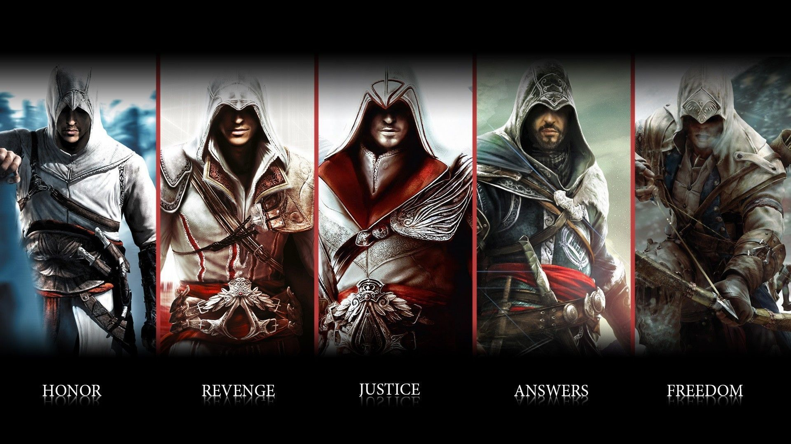

“萬事皆虛，萬事皆允。”——信條的格言

阿泰爾與阿爾莫林關於信條的問答：
-何為真實？
-我們對自己報以信心。我們看到世界的本來面目，並且希望全人類都能夠看到。
-何為世界？
-一個幻象。我們可以像他人一樣選擇盲從，也可以選擇超越。
-何為超越?
-銘記萬事皆虛，萬事皆允。我們的信條並非給予我們行事的自由，而是要求我們尋找智慧。
埃齊奧·奧迪托雷
……但這並非教條，而是洞察現實本質的結果。所謂萬事皆虛，是要認識到社會之根基是何等脆弱，而我們必須成為人類文明的守護者。所謂萬事皆允，是要懂得我們是自己行為的主宰者，因而無論結果是榮耀還是悲哀，我們都必須一併承受。
愛德華·肯維
阿·塔拜與愛德華關於信條的問答：
-你是如何看待我們的信條的？
-很難說。因為如果萬事皆虛，那又為什麼要去相信？如果萬事皆允，那又為什麼不去追求所有的慾望？
-是啊，為什麼呢？
-也許這個概念只是智慧的雛形，而非其最終的模樣。
阿爾諾·多里安
“刺客信條教導我們諸行皆被允許。曾經，我認為那是為所欲為的自由，是為了追尋理想可以不計代價。然而如今我明白，這信條並非一紙允諾，而是一條警示。理想大容易讓步於教條，而教條終將湮滅於狂熱。沒有什麼權威能丈量我們所作出的的判斷，也沒有什麼至高無上的神靈能懲戒我們的罪行。最終，只有我們自己可以避免走進迷信的深淵，也只有我們自己可以決斷，我們所選擇的路是否要付出太高的代價。
“我們堅信自己是救贖者和復仇者。我們向反對我們的人宣戰，他們也以戰爭回饋我們。我們渴望在世界上留下自己的足跡，儘管我們常為那些默默無名的鬥爭而獻出生命。我們所做的一切，我們所成為的一切，皆從我們自身開始，也於我們自身結束。”